|
|
|
|
|
On Passage - The Indian Ocean
9th February 2009 07 05.0N 072 55 00E Uligan Island, Thiladhunmathee Atoll, The Maldives
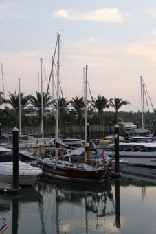
This’ll be another one of those emails started in one place with no idea from where we’ll actually send it. Internet access is somewhat limited out here, although thanks to the old SSB HF radio we have been able to send a few short emails and download weather. Well, we will see.
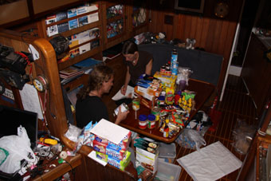 Our last note found us still in Thailand, ready to clear out and head off for Langkawi with our two new crew friends, Martin and Wenda. That’s seems a lifetime ago.
Final preparations and a run to Langkawi
With the usual bureaucratic paper trail complete, we said our goodbyes over the VHF to a few boats as we sailed out for the four day trip to Langkawi. And it was a very pleasant passage, just day sailing and anchoring up each night. None of the mad rush up that we’d had to reach the King’s Cup.
Our last night in Thailand was on the island of Ko Lipi in the Butan group. It’s a deep anchorage but fortunately we were able to pick up a mooring, albeit a little closer than we would have liked to a reef. However, Martin, who swims like a fish, dived down and confirmed it was securely fastened.
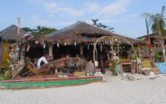 It was a nice place to spend our last night. A beautiful long beach with some basic bar development, but pretty subdued. After a couple of beers we wandered along the sand until we found some food, then worked our way back for another couple of drinks. As we sat there, one of the locals started fire twirling, lengths of chain with oil soaked burning rags at the end. Peter, Jean and Martin wandered onto the beach to have a go – without the flames. Just as well, it’s a lot harder than it looks – and we all ended up with big greasy patches on our backs from where we’d hit ourselves. With a bit more practice though…..
From Ko Lipi it was a short hop to Langkawi – and a great sail. The Big Girl had a ball, giving us 8 or even 9 knots in a smoking broad reach. Sadly, for the final channel up to Bass Harbour, the wind was plumb on the nose and rather than spend several hours tacking back and forth, we decided to cheat and motored up to the marina.
It was odd coming back to Royal Langkawi, but also quite nice, catching up with Tris and Jaz from Eloise. They’d been stuck aboard for a few days waiting for their dinghy to be repaired so we popped over and collected them. Suffering from a bad attack of cabin fever, they insisted on bringing the makings for a few Mai Tai cocktails (dangerous) then borrowed our dinghy to get back that night.
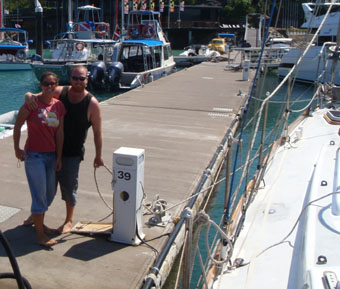 The next couple of days were spent doing the final checks on the boat, doing the fresh food and Duty Free Shopping (we had to repack the lazerette to take some of the 25 slabs of beer we bought) and, in Peter’s case, enjoying a Charlie’s Burger every night – well, there isn’t going to be much of similar culinary delicacies for a few months.
The morning we left, we moved round to the fuel dock to top the tanks up and were really touched that Tris and Jaz came over to help us out as line handlers for when we left. They have been really good friends since we met them in Bali and we’re going to miss them. However, as this life goes, we’re sure we’ll bump into them and Eloise somewhere down the track.
The Passage Plan to Uligan
The plan was to head to Uligan Island, part
of the northern Thiladhunmathee Atoll in the Maldive
Islands. To do so meant heading pretty much due west to
pass between the top end of Sumatra and the Nicobar Islands,
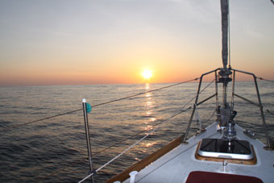
On Passage – Part 1
It took three days to sail across the
Andaman Sea and pass the Nicobars and was a good
introduction – a day of strong winds, a day of lighter winds
and a day of no wind. Finally we left the Andaman Sea
behind and entered the Indian Ocean proper – the depths
going from a few hundred feet to several thousands in a
mile. One day, we worked out that it would take 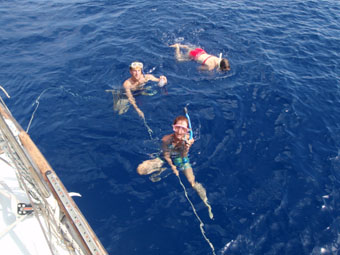
Well, you do things like that. Life on passage takes a strange almost hermit-like existence - remember, the four of us are living in an area maybe half the size of a bus. Most of the time, all you can see is water and sky – the lights from a ship are a welcome sight at night, even while you are trying to make sure you don’t get too close.
Fishing was something we thought might pass the time – once past the Nicobars, we got the line out and caught a stunning tuna – not too big – enough meat to last us all a couple of days. Sadly, that was the only fish we caught for the whole trip!
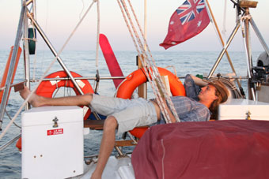 During the daytime, we have one person officially on watch, responsible for keeping a good lookout, staying on track and setting the sails to maximize our speed. Generally though, they are rarely alone - at least one other person will be sitting in the cockpit, chatting or reading a book. The others may be asleep, cooking, writing or reading down below. There’s always some maintenance to do, preventative or actual, as well.
Someone each day gets the long day off – 10
hours with no watch keeping responsibilities. It’s a great
day, especially for catching up on sleep – but the downside
is that they get to cook dinner which is served between
17.00 and 18.00 – the cusp for the watches.
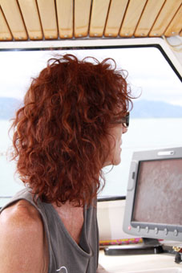
After that, we move on to night watches which are four hours long and have two of us on watch in the cockpit – generally splitting the work so one keeps watch while the other reads or catches a few zzzzz’s on one of the cockpit benches– but there are always two pairs of hands ready at night. Jean has worked out a rolling watch system where instead of the two watch keepers changing at once, one changes every two hours with the other staying another two hours to maintain continuity.
So, what do you do on watch? Well, firstly, watch! The idea is to avoid things and for that we have radar and the Mark 1 Eyeball. Every 15 minutes or so, a quick scan of the horizon with both – although you tend to be watching all the time. Every hour, we record the current details in the deck log (a simple journo’s notepad that is then used to update the formal log book) – current position, CTS (course to steer), COG (Course over ground (or where you are actually going)), BS (Boat Speed), SOG (Speed over ground), True wind details and the Barometric Pressure, plus any comments – Jean tends to wax lyrical – “moonlight like a search light”.
Course To Steer is what you have to steer to achieve the Course Over Ground you want to make. Sometimes they may be the same, but both the current and wind have an effect on the boat – if the current is at 90 degrees to the boat, it will try to push you sideways so you have to steer higher to allow for that in making your course. Likewise, Boat Speed is how fast the boat is going through the water – say 5 knots. If you have a knot of current with you, your Speed over Ground, how you are actually moving across the ground, is 6 knots (if 1 knot against you, SOG is just 4 knots).
It’s funny, you find yourself looking forward to the entry in the log – it’s a measure of how quickly (or slowly) the watch is going.
Where do we get weather from?
During the day, Peter also downloads weather information through our HF radio. Sadly, as the communications on the big ships gets more sophisticated, basic weather sources that yachties can pick up are being phased out. For example, where as Australia produces great synoptic weather charts that can be downloaded as faxes via the HF for their waters, India and the countries that surround the Indian Ocean do not. So most of our weather info comes through SailDocs and Sailmail, being a mixture of GRIB files and textual synoptic information. A friend, Peter Coleman, also helps greatly with his daily forecasts based upon our estimated positions from the day before.
GRIBS are probably our major source of information on this passage. They are graphical representations of pressure, wind, waves and rain generated by biiiiiiiiiig weather computers in the US. They have few downsides – firstly, being computer generated for the world, it is too big a job for any human forecaster to check them, so they need to be treated with a pinch of salt. Secondly, they are macro view, and often miss localized weather events – for example, we had a blowy day one day when the GRIB showed we should have light winds. The next update showed the low pressure system that had developed south of us and that had caused these unexpected winds. And finally, you are limited on what you can download due to their size (Sailmail, being transmitted SLOWLY via HF only allows a 10kb attachment) so we tend to look at the 9 degree square area which we are enter – and only over the next 60 hours.
The best laid plans and the divert to Galle
It’s said that if you make a plan, your God laughs. That’s been so true at times on this trip. But generally, He or She hasn’t had too much fun at our expense – always giving us a fall back.
This time, it was our plan to bypass Sri Lanka and head straight to the Maldives. This was always a judgment call, but we’d heard bad things on the yachties grapevine about Galle. Big paperwork and corrupt Agents and Officials. Sadly, we were to discover the latter is true.
So there we were, about 150 miles from Galle, sailing along on our way to the Maldives and we decided to drop the reef out of the mainsail. This necessitates one of us going up to the mast and bringing the Big Girl up into the wind to take the pressure off the mainsail so it can be hoisted all the way. Before we do that though, we generally furl the headsail – it flaps away when you head up to the wind and the flailing sheets (the long ropes that come from the end of the sail to the cockpit) can hook onto and break things . They also hurt if they slap you.
But the furler was jammed solid. To explain,
a furler is a tube that is slipped down over the forestay –
the bit of wire that runs from the top of the mast to the
bow of the yacht. At the bottom of the furler is a drum of
rope which leads back to the cockpit, and the sail itself is
slid up a grove in the furler tube. To furl the sail (pack
it away), you pull on the line, and this spins the drum
which in turn 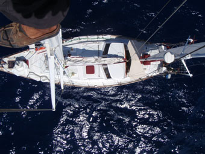
But not this time. It was jammed solid. A quick check of the line and drum showed they were clear so the problem had to be at the top of the mast. “Great!” thought Peter.
Fortunately this happened while the sail was out so we were able to slide it out of the furler and pack it away – and noticed that the eye in the halyard (the rope that pulls up the sail) had almost chaffed through. Peter then donned the Boson’s Chair – a glorified bit of plank in a sling – and headed up the mast to have a look. Not his favorite job while sitting in a marina, let alone at sea. A gentle roll on deck is magnified many times over at the top of the mast and “Hanging on for dear life” was his primary thought.
After fixing up the safety line, he had a look at the top of the furler – or rather, where the top of the furler had been. There should have been a combined spacer (to keep the furler tube away from the forestay) and roller (to prevent chafe on the halyard), all made of plastic. There was nothing – it couldn’t have slid off since it fits around the forestay before that was attached to the mast - the sun must have made the plastic brittle over the years and the fitting had simply shattered.
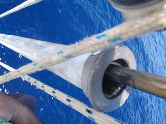 This had allowed the top of the furler to bang around the forestay, rubbing against the foresail halyard and chaffing it before finally getting caught up on the block for the spinnaker halyard. It was easy to release, but Peter realized as he carefully came back down the mast, we could not use the furler like this – the risk of another jam was too great. But there was no way we could make up a replacement fitting on board. We’d either need to source some spare parts or get replacements fabricated.
We briefly considered continuing on to the Maldives, but realized that it was doubtful we could get anything made there if we couldn’t find spare parts. And even if we could source spares, how long would they take to be delivered?
So we sat down and plotted a new route to Galle.
In the meantime, how could we find out about spares? There’s no internet mid-Ocean? So we turned to our friend Peter Coleman with a Sailmail email via the HF radio. He put us in touch with Mike Strong of Strongrope (email: info@strongrope.com) who contacted the manufacturers in France and reported back that this make of furler hadn’t be made for many years – and there were no spares. Mike also sourced a copy of the original manual and schematics and emailed them to our Ocean Odyssey email address so we could download them in Galle. (We ended up with two copies – Martin’s Dad, Manfred, was also on the case – Facnor must have wondered why they had two telephone calls about a furler they no longer made – one from Australia, the other from Germany – on the same day).
Arriving in Galle – A Naval Search and a Great Agent
While we carry both Paper and Electronic charts for Galle Harbour and its Approaches, we had very little up to date information on procedures on arrival. So we put a call out on the Radio Net.
The Net is a group of yachts who keep in touch with each other twice a day using our HF Radios. Kurt of Interlude runs the net, and each morning notes each yachts position (Jean, our Net Queen, does the same and we’d guess most other yachts also do) and we give out what sort of weather we’re getting and any other useful bits for the other yachts. After the “formal” bit comes the “Jaw-Jaw” where yachts just chat amongst themselves.
The Net excelled itself, with several yachts coming back to us with information via both the Radio and Sailmail. One thing that was repeated again and again was to be careful with which the two Agents in Galle to choose – to use GAC and not the Windsors.
The Agent is important – you must appoint one to help you with all the formalities and they should be able to help you source repairs, fuel etc. GAC are relatively new to helping yachts having previously only been agents for motor craft, but have soon developed a justifiably good reputation. The other Agent, the Windsors, had a monopoly for many years – and, well, let us say, we heard it all got too comfortable.
We contacted GAC using Sailmail, requesting they act as our Agent. They soon replied “We will” and asked us for various details about crew and yacht to expedite the formalities before we arrived.
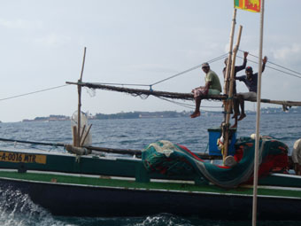 Just after a fishing boat had come past with the guys aboard waving away and when we were about 30 minutes out, we contacted Galle Port Authority on VHF Ch16 and they instructed us to anchor just off the breakwater and await the Navy to come and check us out (Sri Lanka has been effect in a state of civil war for many years and the security forces are everywhere. Galle itself is sealed each night with big netted booms and patrolled by machine-gun toting launches. Rumour has it that they also drop the odd scuttling charge over the side every now and again to deter Tamil Tiger frogmen).
Since it was getting late, we thought we’d be waiting till the next morning and so were delighted that after just 30 minutes a Navy Launch came over. A CPO and couple of ratings climbed aboard and having checked our papers, the CPO and Peter went below so he could carry out his search. Surprisingly, there were no more papers signed or stamped as he gave us the all clear, warning us though that no photographs were allowed in the harbour area.
We called up the Port Authority again for permission to enter the harbour which was given. GAC came back to us as well and said a representative would be there to show us where to go.
Dusk was falling as we threaded out way through the boom nets (glancing a little nervously at the GPMG following us from the Guard Tower) and spotted a young Sri Lankan man gesticulating and pointing us towards some yellow buoys. We couldn’t hear him, but he did a great job getting us to understand we were to “Med Moor” to one (we decided there and then never to play charades against him).
Med Mooring is when you drop your anchor, laying chain out until you can get a line onto the buoy from the stern. A bit of judicious easing and tightening of the anchor chain and line and you should nice and snug. Well, that’s the plan, but Hinewai was feeling a tad petulant and refused to reverse where we wanted her to (this does not bode well from when we reach the Med – I think we’re going to need a day or two practicing). By that point, Martin is up on the foredeck pumping our dinghy up, but then a couple of yachties passed in their dinghy and ran our line to the buoy.
Once secured, we sat back, finished with engines and cracked a beer. Well, all bar Martin who paddles ashore to pickup Chaminda Gunaskara, the Agent’s representative. And a nicer young man you’d be hard pushed to meet – his wide beaming smile lighting up the boat as he came aboard.
He brought out the ubiquitous paperwork that Peter is getting well used to filling in and explained he would start getting everything processed the next morning. He’d come round early and pick us up to take us down to the Port Authority and Immigration – the only thing he wasn’t sure about was when Customs would come out to Hinewai.
It was well dark by the time he left and we settled down for a light supper, watched a video up in the cockpit and all got an early night.
And this seems a good place to stop for now. Next we’ll tell you about Corrupt Customs Officials and, with their exception, how much we enjoyed Galle as we repaired Hinewai.
14d 54 898N 040d 50.780E Sat 14/3/09 (Yes, getting all this finished while passaging the Red Sea – we are so behind).
Next Log Page: Sri Lanka - a special stop
|
|
|
|
|
|
|
|
The Crew The Route The Yacht The Log Guestbook Links Contact Us |
|
|
|
|
|
Home |
|
|
All Original Content of this Web Site Copyright © 2000, 2001, 2002, 2003, 2004, 2005, 2006, 2007, 2008, 2009 Ocean Odyssey Pty Ltd |